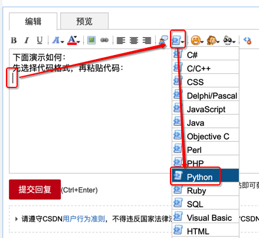
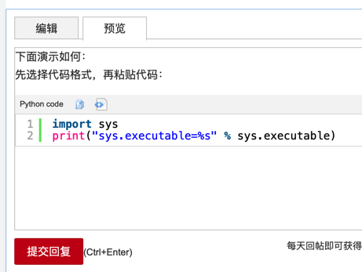

csdn的bbs论坛
csdn的bbs论坛中提问题时如何贴代码
而关于贴代码到论坛中的问题，很多小白不会用论坛中的编辑器，不会贴代码。
下面把：
【求助】在学Python编程从入门到实践，继承这章添加Battery类后原来的子类跑不了了-CSDN论坛
回复别人的内容整理如下，作为解释：csdn的bbs论坛中提问题时如何贴代码 的回答：
csdn中粘贴代码的核心逻辑是：
确保输入的内容是符合下面这种格式：
[code=python]此处粘贴你的代码即可[/code]
即可，此时
- 发布后的回复中
- 发布出来的问题帖子中
- 发布之前，点击预览
就是带彩色的，代码高亮后的，效果好看的代码了
对于如何让代码变成上面这种格式，有多种操作方式：
方式1：自己手动输入
其实就是普通的文字，文本，自己输入：
[code=python][/code]
然后把你要代码放进去，即可。
通过编辑器自动插入
又分2种：
- 方式1：选中代码 -> 选择格式 -> 选择某个语言（比如Python）
- 方式2：鼠标点击要插入代码的位置 -> 选择格式 -> 选择某个语言（比如Python）->再粘贴代码进去
- 鼠标定位到要粘贴代码的位置，然后去选择：代码->Python
- 
- 会自动输入：
[code=python][/code]
- 再粘贴代码到里面：
- 比如：
[code=python] import sys print("sys.executable=%s" % sys.executable) [/code]
- 比如：
- 鼠标定位到要粘贴代码的位置，然后去选择：代码->Python


至此，就能看到代码高亮的效果了：
- 发布前的预览
- 真正发布后
- 

这样就可以保留原始代码的格式
而带缩进的代码也就不会乱了。
且显示起来带颜色，即代码高亮，更易读。
别人（想要帮你，回答你问题的人）也容易拷贝出完整代码，帮你测试代码，找到问题原因。